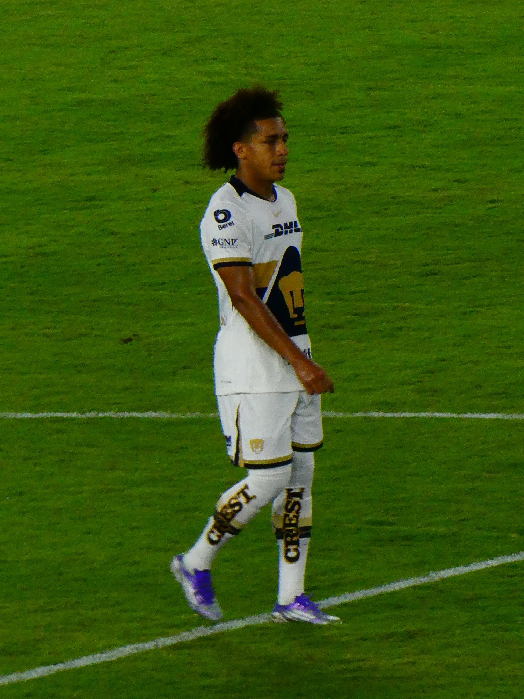

| Nombre |
Posición |
Edad |
Bibliografía |
Portada |
| Alfredo Stephens |
Delantero |
30 |
Atacante del Ironi Kiryat Shmona (Israel), goleador constante y con amplia experiencia internacional. |
|
| Cecilio Waterman |
Delantero |
33 |
Delantero del Alianza Lima (Perú), reconocido por su potencia física y definición. |
|
| Ismael Díaz |
Delantero |
28 |
Delantero de Universidad Católica (Chile), veloz, hábil y uno de los referentes ofensivos de Panamá. |
|
| José Luis Rodríguez |
Extremo |
26 |
Juega en Famalicão (Portugal), desequilibrante por la banda izquierda y con buena visión ofensiva. |
|
| Adalberto Carrasquilla |
Mediocampista |
26 |
Centrocampista del Houston Dynamo (MLS), cerebro del mediocampo panameño, con gran visión y técnica. |
 |
| Aníbal Godoy |
Mediocampista |
35 |
Mediocampista del Nashville SC (MLS), líder veterano y pieza clave en la contención. |
|
| Michael Murillo |
Lateral derecho |
29 |
Juega en Olympique de Marsella (Francia), sólido defensivamente y con proyección ofensiva. |
 |
| Éric Davis |
Lateral izquierdo |
33 |
Defensor del D.C. United (MLS), especialista en tiros libres y experimentado en torneos internacionales. |
|
| Andrés Andrade |
Defensa central |
25 |
Defensor del LASK (Austria), joven, rápido y con buena salida desde el fondo. |
|
| Fidel Escobar |
Defensa central |
30 |
Defensa del Saprissa (Costa Rica), fuerte en el juego aéreo y con gran liderazgo. |
|
| Orlando Mosquera |
Portero |
30 |
Arquero del Maccabi Tel Aviv (Israel), seguro bajo los tres palos y figura en eliminatorias. |
|
| Kevin Cajar |
Mediocampista |
21 |
Joven talento panameño con proyección internacional, parte del futuro de la selección. |
|